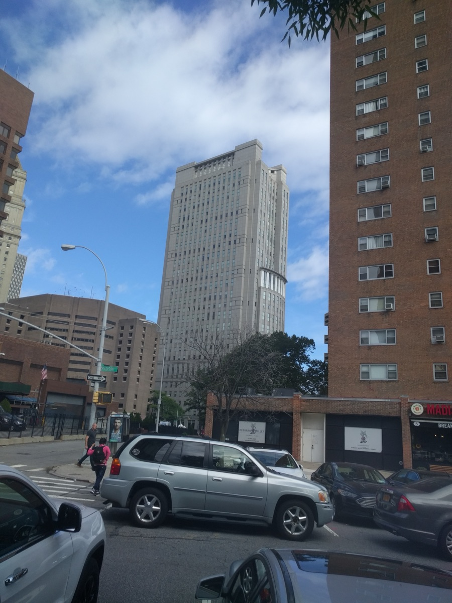

Executive Summary
2026년 7월 9일, 뉴욕타임스와 뉴욕 데일리뉴스 등 원고 언론사들이 OpenAI에 대한 제재를 뉴욕 남부지방법원에 신청했습니다. 핵심 주장은 두 가지입니다. 하나는 OpenAI가 2년 넘게 "학습 데이터와 ChatGPT 출력 로그에서 원고의 저작물을 검색할 능력이 없다"고 법원에 진술해 왔지만, 사실은 소송 이전부터 그 검색 도구를 이미 갖고 있었다는 것. 다른 하나는 법원의 보존명령에도 불구하고 챗봇 대화 로그의 삭제가 계속됐다는 것입니다.
2026년 4월 증언에서 OpenAI의 데이터 프라이버시 엔지니어는 회사가 이미 약 7,800만 건의 비식별화 대화 데이터셋을 구축해, 자사의 침해 규모를 스스로 가늠하는 데 쓰고 있었다고 밝혔습니다. "검색할 수 없다"던 진술과 정면으로 부딪히는 사실입니다. 그 사이 법원은 전체 보존 로그가 "수백억 건대"라고 못박으며 그 0.05%도 안 되는 2,000만 건 샘플 제출을 명령했지만, 제출본은 과도한 편집으로 "사용 불가능"이라는 평가를 받았습니다.
데이터를 다루는 쪽에 이 사건이 던지는 질문은 저작권이 아닙니다. 학습 코퍼스와 출력 로그를 검색 가능하고 보존 가능하게 유지했는지가 곧 증거능력이 된다는 것입니다. 이 글은 진행 중인 이 사건을 데이터 계보(lineage)와 보존, 관측 가능성(observability)이라는 세 축으로 읽고, 지울 수 있게 설계한 데이터가 왜 법정에서 은닉으로 읽히는지를 짚습니다.
주요 수치
출처: Bloomberg Law, TechCrunch, Terms.law
이 다툼의 무게는 네 숫자에 담겨 있습니다. 법원 스스로 못박은 보존 로그의 총량, 회사가 소송 전부터 내부에 갖고 있던 검색 데이터셋의 규모, 법원이 제출을 명령한 샘플과 그것이 전체에서 차지하는 비율, 그리고 "검색할 수 없다"는 진술을 유지해 온 기간까지. 삭제와 검색이 추상적 기술 용어가 아니라 증거의 존폐를 가르는 변수라는 사실이 이 안에 들어 있습니다.
수십억 건
보존된 챗봇 로그
법원이 "in the tens of billions"으로 못박은 보존 출력 로그 총량
7,800만 건
내부 검색 데이터셋
소송 전부터 자사 침해 규모 가늠에 쓰던 비식별 대화 DB
2,000만 건
법원 제출 명령 샘플
전체 보존 로그의 0.05% 미만. 제출본은 "사용 불가능" 평가
2년+
"검색 불가" 진술 기간
검색 능력이 없다고 법원에 진술해 온 기간, 실제로는 도구 보유
무엇을 지웠다고 주장되는가
2026년 7월 9일, 뉴욕타임스와 데일리뉴스를 포함한 원고 언론사들이 뉴욕 남부지방법원(SDNY)에 OpenAI 제재 신청서를 제출했습니다. 사건은 여러 언론사 소송을 병합한 저작권 다중지구소송(MDL, 사건번호 1:25-md-03143)이고, 담당은 치안판사 오나 왕(Ona Wang)입니다. 신청서가 겨냥한 것은 "AI가 우리 기사로 학습했다"는 익숙한 저작권 쟁점이 아니라, 증거를 다루는 방식이었습니다.
원고 측 리드 변호사 이언 크로스비(Ian Crosby)는 "2년 넘게 OpenAI는 타임스와 데일리뉴스 원고, 대중, 그리고 법원에 거짓말을 했다"고 주장합니다. 신청서는 두 갈래로 나뉩니다. 하나는 은폐입니다. 회사가 학습 데이터셋과 출력 로그에서 원고 저작물을 검색할 능력이 없다고 진술해 왔으나, 실제로는 소송 제기 이전부터 그 검색 능력을 이미 구축해 사용하고 있었다는 것. 다른 하나는 증거 파기입니다. 법원의 보존명령에도 불구하고 수십억 건의 대화 로그를 삭제·압축해 되살릴 수 없는 상태로 만들었다는 것입니다.
신청서는 스스로의 성격을 이렇게 규정합니다. "이 사건은 복제에 관한 것이다. 그런 일이 있었다는 데에는 의문의 여지가 없다(This is a case about copying. There is no question that it happened)." 침해 사실 자체는 다툴 것이 없고, 이제 다툴 것은 그 사실을 확인해 줄 데이터가 남아 있느냐라는 선언입니다. 저작권 본안에서 증거개시로 무게중심이 옮겨간 이유가 원고 측의 문장 안에 이미 들어 있습니다.

핵심: 이 신청서에서 위험은 모델이 무엇을 출력했느냐가 아니라 데이터를 보존하고 검색할 수 있었느냐에 있습니다. 검색 능력을 부인한 진술과, 명령 이후에도 이어진 삭제가 저작권 다툼을 증거개시 다툼으로 바꿔 놓았습니다.
저작권 소송이 증거개시 싸움이 된 경위
소송은 2023년 말 시작됐습니다. 언론사들이 자사 기사 수백만 건이 무단 학습됐다며 OpenAI와 마이크로소프트를 상대로 저작권 소송을 냈고, 이후 법원은 무료·Plus·Pro·Team 전 티어의 ChatGPT 출력 데이터를 무기한 보존하라는 명령을 내렸습니다. 문제는 그다음입니다. 원고 측은 이 보존명령이 발효된 뒤에도 로그의 삭제와 압축이 계속됐다고 봅니다.
2025년 11월, 오나 왕 판사는 2,000만 건 규모의 ChatGPT 로그 샘플을 제출하라고 명령하며 재고 신청도 기각했습니다. 결정문에서 판사는 보존된 소비자 출력 로그의 총량이 "수백억 건대(in the tens of billions)"이며, 2,000만 건 샘플은 그 전체의 "0.05% 미만"이라고 적었습니다. 제목에 등장하는 "수십억 건"은 언론사의 과장이 아니라 법원 스스로 못박은 숫자입니다.
그 뒤 흐름은 이렇게 이어집니다. 2025년 9월 말, 소비자 ChatGPT와 API 데이터의 무기한 보존 의무가 종료되면서 표준 30일 자동 삭제 정책으로 복귀했습니다. 2025년 12월 OpenAI가 2,000만 건 샘플을 제출했지만, 편집(redaction)이 과도해 법원은 이를 "사용 불가능(unusable)"하다고 평가했습니다. 저작권 침해 여부를 다투기도 전에, 그 침해를 입증할 증거가 남아 있는지가 먼저 쟁점이 된 것입니다.
왜 중요한가: 보존명령과 그 이후의 삭제 주장이 결합되면서, 소송의 무게중심이 "무엇을 학습했나"에서 "그것을 입증할 로그가 아직 존재하나"로 옮겨갔습니다. 증거가 사라지면 본안 판단 이전에 소송의 판이 기웁니다.
7,800만 건, 능력과 진술의 괴리
은폐 주장의 근거는 2026년 4월의 증언입니다. 법원 명령에 따른 증언에서 OpenAI의 데이터 프라이버시 엔지니어는, 회사가 이미 세 가지를 갖추고 있었다고 밝혔습니다. 학습 데이터를 검색하는 도구, 비식별화된 ChatGPT 대화의 검색 가능한 데이터셋, 그리고 언론사 콘텐츠를 검색하는 기능입니다. 특히 약 7,800만 건 규모의 비식별 대화 데이터셋은, 회사가 자사의 저작권 침해 규모를 스스로 가늠하는 용도로 이미 사용하고 있었다고 합니다.
이 사실이 문제가 되는 이유는 단순합니다. 검색할 수 없다는 진술과, 검색해서 침해 규모를 재고 있었다는 내부 실무가 양립할 수 없기 때문입니다. 능력의 부재를 근거로 증거개시를 좁혀 온 진술이, 능력의 존재라는 반대 사실 앞에서 무너지는 구조입니다. 원고 측이 "거짓말"이라는 강한 단어를 쓰는 지점이 바로 여기입니다.
OpenAI는 이를 반박합니다. 대변인은 "타임스의 소송이 약해지고 청구를 접게 되자, 이 사건과 무관한 사람들의 프라이버시를 침해하려는 시도를 이어 가고 있으며 명백히 허위인 주장을 하고 있다"고 밝혔습니다. 보존명령 자체를 두고도 회사는 앞서 이를 "사용자에게 한 프라이버시 약속과 근본적으로 충돌하는" 과도한 요구로 규정한 바 있습니다. 같은 삭제를 한쪽은 프라이버시 수호로, 다른 쪽은 증거 인멸로 읽습니다. 이 프레이밍의 대립이 사건의 핵심입니다.
한 줄 요약: 데이터를 검색 가능하게 유지했다는 사실 자체가, "검색할 수 없다"는 방어의 신뢰도를 결정합니다. 내부적으로 재구성할 수 있었던 것을 법원 앞에서 재구성할 수 없다고 말하는 순간, 그 진술은 능력이 아니라 의도의 문제가 됩니다.
'지울 수 있게'와 '증거로 남게'는 다른 결정이다
이 사건이 데이터 담당자에게 보내는 신호는 저작권 판례 바깥에 있습니다. 핵심은 데이터 거버넌스입니다. 학습 코퍼스와 출력 로그를 검색 가능하게, 보존 가능하게 유지했는지가 곧 증거능력이 됩니다. 데이터를 언제든 지울 수 있도록 설계하는 것과, 필요할 때 증거로 재구성할 수 있도록 설계하는 것은 전혀 다른 엔지니어링 결정입니다. 그리고 그 결정은 사후에 법적 책임으로 되돌아옵니다.
위험한 지점은 두 설계가 평상시에는 똑같아 보인다는 데 있습니다. 프라이버시를 위해 30일 자동 삭제를 넣는 것은 정당한 설계입니다. 그러나 보존명령이 내려온 뒤에도 같은 파이프라인이 그대로 돌아가면, "지울 수 있게 설계한 데이터"는 법정에서 "고의로 은닉한 데이터"로 읽힙니다. 삭제 자체가 불법이어서가 아니라, 삭제를 멈추고 보존으로 전환하는 스위치가 설계에 없었기 때문입니다.
그래서 관측 가능성(observability)은 컴플라이언스 사후 대응이 아니라 설계 시점의 원칙이어야 합니다. 어떤 데이터가 언제 들어와 어떻게 가공되고 언제 삭제됐는지를 추적할 수 있는 계보(lineage)가 파이프라인에 내장돼 있어야, 보존명령이 내려온 순간 "무엇을, 어디에, 어떤 상태로 갖고 있는지"를 즉시 답할 수 있습니다. 이 답을 준비해 두지 못한 조직은, 성실히 삭제 정책을 지킨 것조차 은닉으로 의심받게 됩니다.
달라진 것: 데이터 계보·보존·검색성은 이제 엔지니어링 미덕이 아니라 법적 의무에 가까워졌습니다. 관측 가능성을 사후가 아니라 설계 시점에 넣지 않으면, 정당한 삭제와 증거 인멸을 구분해 줄 기록 자체가 남지 않습니다.
실무자가 지금 점검할 것
이 사건은 아직 진행 중입니다. 제재가 실제로 부과될지, 배심원에게 증거 파기를 알리는 지침(spoliation instruction)이 채택될지는 결정되지 않았습니다. 다만 결과와 무관하게, 데이터를 운영하는 조직이 지금 점검해야 할 항목은 분명합니다. 자사 파이프라인에 다음 세 가지가 있는지부터 확인하는 데서 출발합니다.
- • 보존정책과 법적 보류의 연결: 보존명령이나 법적 보류(legal hold)가 발효되면 관련 데이터의 자동 삭제를 즉시 멈추는 자동화된 스위치가 있는가. 사람이 수동으로 파이프라인을 뒤져야 한다면 이미 늦습니다.
- • 사후 재구성 가능한 감사 추적: 학습 코퍼스와 출력 로그에 대해 "무엇이 언제 들어와 어떻게 가공되고 언제 삭제됐는지"를 나중에 재구성할 수 있는 계보 기록이 남아 있는가.
- • 삭제 결정의 문서화: "삭제 = 프라이버시"와 "삭제 = 증거 인멸"이라는 두 해석이 충돌할 때, 왜 그 시점에 그 데이터를 지웠는지를 설명할 근거가 기록으로 남아 있는가.
세 항목의 공통점은 하나입니다. 필요해진 다음에 만들 수 없다는 것. 보존명령은 예고 없이 오고, 그 순간 존재하지 않는 기록은 소급해서 만들 수 없습니다. 이 사건이 남기는 실무적 교훈은, 관측 가능성과 계보를 위기 대응 도구가 아니라 평상시 파이프라인의 기본값으로 두라는 것입니다. 지울 수 있게 설계하되, 지운 과정을 설명할 수 있게 함께 설계하는 조직만이 삭제와 은닉의 경계에서 자신을 방어할 수 있습니다.
마무리: 다음에 법정이나 규제기관, 감사팀이 던질 질문은 "그 데이터를 지웠는가"가 아니라 "지운 과정을 설명할 수 있는가"입니다. 관측 가능성을 설계 시점에 심어 둔 조직만이 그 질문에 같은 기록으로 답할 수 있습니다.
참고문헌
업계·보도
- 1.Bloomberg Law. (2026). "New York Times Seeks Sanctions Against OpenAI in Copyright Case." Bloomberg Law. — 2026-07-09 제재 신청 보도.
- 2.TechCrunch. (2026). "New York Times says OpenAI hid evidence in ChatGPT copyright trial." TechCrunch. — 데이터 프라이버시 엔지니어 증언과 7,800만 건 비식별 대화 데이터셋 출처.
- 3.The Washington Times. (2026). "News outlets urging judge to sanction OpenAI in high-stakes AI copyright case." The Washington Times. — 제재 신청 요지와 원고 측 요구 구제책.
- 4.Terms.law. (2025). "OpenAI v. New York Times stopped being just a copyright case the moment the court turned to your ChatGPT logs." Terms.law. — 2,000만 건 로그 명령과 '0.05%' 판사 발언 배경.
- 5.MediaNama. (2026). "Why The New York Times Wants The Court To Sanction OpenAI." MediaNama. — 소송 배경과 제재 신청 요약(교차검증).
공식 문서
- 6.OpenAI. (2025). "Response to the New York Times' data demands in order to protect user privacy." OpenAI. — 보존명령을 프라이버시 침해로 규정한 공식 입장(1차 자료).